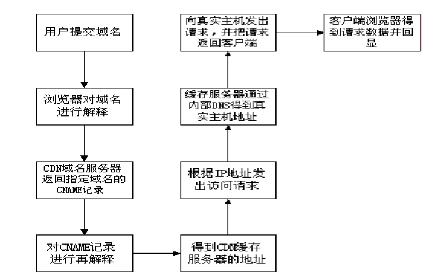

什么是 CDN
随着互联网的高速发展，用户在使用网络的时，对于页面浏览的速度和效果越发的重视。一般而言，让一个用户等待的时间太过漫长，可能会导致实际访问我们站点的用户数量急剧降低，这是任何一家企业公司都不希望看到的事情。
特别是当用户与网站之间的链路被突发的大流量数据拥塞时，对于异地互联网用户急速增加的地区来说，访问质量不良更是一个急待解决的问题。如何才能让各地的用户都能够进行高质量的访问，并尽量减少由此而产生的费用和网站管理压力呢？内容发布网络（ContentDelivery Network，CDN）正是应此要求而设计。
CDN的全称是内容分发网络（Content Delivery Network),其设计目的是通过在现有的Internet中增加一层新的网络架构，将网站的内容发布到最接近用户的网络“边缘”，使用户可以就近取得所需的内容，提高用户访问网站的响应速度。 CDN有别于镜像，因为它比镜像更智能，或者可以做这样一个比喻：CDN=更智能的镜像+缓存+流量导流。因而，CDN可以明显提高Internet网络中信息流动的效率。从技术上全面解决由于网络带宽小、用户访问量大、网点分布不均等问题，提高用户访问网站的响应速度。
CDN 的分类
CDN的实现分为三类：镜像、高速缓存、专线。
镜像站点：是最常见的，它让内容直接发布，适用于静态和准动态的数据同步。但是购买和维护新服务器的费用较高，还必须在各个地区设置镜像服务器，配备专业技术人员进行管理与维护。对于大型网站来说，更新所用的带宽成本也大大提高了。
高速缓存：成本较低，适用于静态内容。Internet的统计表明，超过80%的用户经常访问的是20%的网站的内容，在这个规律下，缓存服务器可以处理大部分客户 的静态请求，而原始的服务器只需处理约20%左右的非缓存请求和动态请求，于是大大加快了客户请求的响应时间，并降低了原始服务器的负载。
专线：让用户直接访问数据源，可以实现数据的动态同步。
CDN 的结构
CDN网络架构主要由两大部分，分为中心和边缘两部分，中心指CDN网管中心和DNS重定向解析中心，负责全局负载均衡，设备系统安装在管理中心机房，边缘主要指异地节点，CDN分发的载体，主要由Cache Server和负载均衡器等组成。
狭义地讲，内容分发布网络(CDN)是一种新型的网络构建方式，它是为能在传统的IP网发布宽带丰富媒体而特别优化的网络覆盖层；而从广义的角度，CDN代表了一种基于质量与秩序的网络服务模式。简单地说，内容发布网(CDN)是一个经策略性部署的整体，包括分布式存储、负载均衡、网络请求的重定向和内容管理４个要件，而内容管理和全局
的网络流量管理(Traffic Management)是CDN的核心所在。通过用户就近性和服务器负载判断，CDN确保内容以一种极为高效的方式为用户的请求提供服务。总的来说，内容服务基于缓存服务器，也称作代理缓存(Surrogate)，它位于网络的边缘，距用户仅有”一跳”(Single Hop)之遥。同时代理缓存是内容提供商源服务器（通常位于CDN服务提供商的
数据中心）的一个透明镜像。这样的架构使得CDN服务提供商能够代表他们客户，即内容供应商，向最终用户提供尽可能好的体验，而这些用户是不能容忍请求响应时间有任何延迟的。据统计采用CDN技术，能处理整个网站页面的70%～95％的内容访问量，减轻服务器的压力，提升了网站的性能和可扩展性。
当用户访问加入CDN服务的网站时， 域名解析请求将最终交给全局负载均衡DNS进行处理。全局负载均衡DNS通过一组预先定义好的策略，将当时最接近用户的节点地址提供给用户，使用户能够得到快速的服务。同时，它还与分布在世界各地的所有CDN节点保持通信，搜集各节点的通信状态，确保不将用户的请求分配到不可用的CDN节点上。从技术实现上看CDN实际上是通过DNS做全局负载均衡的。
对于普通的Internet用户来讲，每个CDN节点就相当于一个放置在它周围的WEB。通过全局负载均衡DNS的控制，用户的请求被透明地指向离他最近的节点，节点中CDN服务器会像网站的原始服务器一样，响应用户的请求。由于它离用户更近，因而响应时间必然更快。
每个CDN节点至少由两部分组成：负载均衡设备和高速缓存服务器负载均衡设备负责每个节点中各个Cache的负载均衡，保证节点的工作效率；同时，负载均衡设备还负责收集节点与周围环境的信息，保持与全局负载DNS的通信，实现整个系统的负载均衡。
高速缓存服务器（Cache）负责存储客户网站的大量信息，就像一个靠近用户的网络服务器一样响应本地用户的访问请求。
CDN的管理系统是整个系统能够正常运转的保证。它不仅能对系统中的各个子系统和设备进行实时监控，对各种故障产生相应的告警，还可以实时监测到系统中总的流量和各节点的流量，并保存在系统的数据库中，使网管人员能够方便地进行进一步分析。通过完善的网管系统，用户可以对系统配置进行修改。
理论上，最简单的CDN网络有一个负责全局负载均衡的DNS和各节点一台CacheServer，即可运行。DNS支持根据用户源IP地址解析不同的IP，实现就近访问。为了保证高可用性等，需要监视各节点的流量、健康状况等。一个节点的单台Cache Server承载数量不够时，才需要多台Cache Server，多台Cache Server同时工作，才需要负载均衡器，使Cache Server群协同工作。
与目前现有的内容发布模式相比较，CDN强调了网络在内容发布中的重要性。通过引入主动的内容管理层的和全局负载均衡，CDN从根本上区别于传统的内容发布模式。在传统的内容发布模式中，内容的发布由内容提供商的应用服务器完成，而网络只表现为一个透明的数据传输通道，这种透明性表现在网络的质量保证仅仅停留在数据包的层面，而不能根据内容对象的不同区分服务质量。此外由于IP网的”尽力而为”的特性使得其质量证是依靠在用户和应用服务器之间端到端地提供充分的、远大于实际所需的带宽通量来实现的。在这样的内容发布模式下，不仅大量宝贵的骨干带宽被占用，同时内容提供商的应用服务器的负载也变得非常重，而且不可预计。
当发生一些热点事件和出现浪涌流量时，会产生局部热点效应，从而使应用服务器过载。这种基于中心的应用服务器的内容发布模式的另外一个缺陷在于个性化服务的缺失和对宽带服务价值链的扭曲。
由上图可见，用户访问未使用CDN缓冲网站的过程为:
1)、用户向浏览器提供要访问的域名；
2)、浏览器调用域名解析函数库对域名进行解析，以得到此域名对应的IP地址；
3)、浏览器使用所得到的IP地址，域名的服务主机发出数据访问请求；
4)、浏览器根据域名主机返回的数据显示网页的内容。

通过上图，我们可以了解到，使用了CDN缓存后网站的访问过程变为：1)、用户向浏览器提供要访问的域名；
2)、浏览器调用域名解析库对域名进行解析，由于CDN对域名解析过程进行了调整，所以解析函数库一般得到的是该域名对应的CNAME记录，为了得到实际IP地址，浏览器需要再次对获得的CNAME域名进行解析以得到实际的IP地址；在此过程中，使用的全局负载均衡DNS解析，如根据地理位置信息解析对应的IP地址，使得用户能就近访问。
3)、此次解析得到CDN缓存服务器的IP地址，浏览器在得到实际的IP地址以后，向缓存服务器发出访问请求；
4)、缓存服务器根据浏览器提供的要访问的域名，通过Cache Server内部专用DNS解析得到此域名的实际IP地址，再由缓存服务器向此实际IP地址提交访问请求；
5)、缓存服务器从实际IP地址得得到内容以后，一方面在本地进行保存，以备以后使用，二方面把获取的数据返回给客户端，完成数据服务过程；
6)、客户端得到由缓存服务器返回的数据以后显示出来并完成整个浏览的数据请求过程。
通过以上的分析我们可以得到，为了实现既要对普通用户透明(即加入缓存以后用户客户端无需进行任何设置，直接使用被加速原有的域名即可访问)，又要在为指定的网站提供加速服务的同时降低对内容提供商的影响，只要修改整个访问过程中的域名解析部分，以实现透明的加速服务，下面是CDN网络实现的具体操作过程。
1)、作为内容提供商，只需要把域名解释权交给CDN运营商，其他方面不需要进行任何的修改；操作时，ICP修改自己域名的解析记录，一般用cname方式指向CDN网络Cache服务器的地址。
2)、作为CDN运营商，首先需要为ICP的域名提供公开的解析，为了实现sortlist，一般是把内容提供商的域名解释结果指向一个CNAME记录；
3)、当需要进行sorlist时，CDN运营商可以利用DNS对CNAME指向的域名解析过程进行特殊处理，使DNS服务器在接收到客户端请求时可以根据客户端的IP地址，返回相同域名的不同IP地址；
4)、由于从cname获得的IP地址，并且带有hostname信息，请求到达Cache Server之后，Cache Server必须知道源服务器的IP地址，所以在CDN运营商内部维护一个内部DNS服务器，用于解释用户所访问的域名的真实IP地址；
5)、在维护内部DNS服务器时，还需要维护一台授权服务器，控制哪些域名可以进行缓存，而哪些又不进行缓存，以免发生开放代理的情况。
# DNS-VIEW
DNS系统简介
DNS系统是个多级别的、分布的数据库系统。它保存互连网主机名和IP地址的对应关系，也保存IP地址和主机名的对应关系，邮件路由信息,和其他一些互连网程式用到的信息。
DNS中客户程序查找的信息叫解析库（resolver library)，他发送一个查询到一个或多个服务器并等待回应，BIND 9包含了域名服务和解析库。DNS中的数据是按树型结构存储的，或者说是按树型管理的。树的每个节点，称为一个域，由一个库文件标示。表示节点的域名相互串联直到根域（root node）。他从右到左写成字符串，中间用“点”（.）分隔。一个域名只需要在他的父域中名字唯一就可以了。
例如在Uplooking公司中 一个主机的名字是mail.uplooking.com,这里com 是最高级的域名，mail.uplooking.com 属于这个域，uplooking是com的的子域，mail 是主机的名字。
为了管理方便，名址空间被分隔成一些区，这些区叫做区域（zones）。每一个从一个节点开始，并且延伸至一个叶子节点，或延伸到另一个区域的开始。每一个区域的数据都存在DNS中，他通过DNS协议应答本区域的DNS查询。相关的域名数据存储在资源记录中（resource records (RRs)）。正确的操作域名服务器，很重要的一点是理解区域（zones）和域（domain）的区别。
区域（ zone）是DNS树中一个节点的代表。一个区域（zone）包含一个域树（domain tree）相邻近的部分，对他来说，一个域名服务器拥有他完整的信息，并拥有管理权。他包含从某一节点以下任何的域名，除了那些连接到其他区的部分（那些部分可能由其他更低级的服务器管理）。一个节点会被一个或多个父区域的NS 记录（NS records ）标注，他会被从根区域开始逐层匹配。
例如，uplooking.com 域中有host1.stu1.uplooking.com 和host2.stu2.uplooking.com两台主机，但uplooking.com 区域中只有stu1.example.com 和 stu2.example.com 两个区域。一个区域（zone）能够精确的映射一个域（domain），也能够只包含一个域的部分，其他部分由另一个域名服务器解释。DNS中每一个名字都是个域，即使他是个终点（terminal），没有子域（subdomains）。每一个子域都是个域，除了根域外任何的域也都是子域。这些术语的意义都不但是字面能够理解的，建议阅读RFCs 1033，1034 and 1035来完整理解这些难点和细节。
虽然BIND 叫作 “域名服务软件”，他主要处理“区域”。named.conf 中使用“主”（master）或从（slave）声明区域，而不是域，假如请求一个域的从服务器，实际是请求这个区域信息的一种“收集”（collection ofzones）。每个区都至少有一个主域名服务器（authoritative nameserver），他包含了本区域完整的数据， 为了使DNS服务更稳定，很多区域有两个或两个以上的主域名服务器。
主域名服务器的应答含有”authoritative answer” (AA) 位，这使对DNS配置进行排错时更容易。排错工具能够如dig。主域名服务器是区域数据保存的地方，这个服务器也叫“管理服务器”（primary master server）, 或简称“管理服器”（primary），他从本地文档中读入数据，这些数据可能是手工输入的，也可能是由某些本地文档生成的，然后再由人来编辑的，这些文档叫“区域数据文档”（ zone file）或“主数据文档” （master file ）。其他的主服务器，从属服务器，也叫第二服务器，从其他服务器中获取区域数据信息，这个过程叫“区域数据传送”（ zone transfer）。典型的传送是从管理服务器传送到从属服务器，但也可能是从另外一个从属服务器中获得数据。也就是说，一个从属服务器对另外一个从属服务器来说，也可能是管理服务器角色。
通常区域任何的主域名服务器都监听父区域的NS记录，这些NS记录包含父区域的一个授权，主域名服务器也会把自己列在区域文档中，作为最高层或叫顶层。能够在区域的顶层服务器的NS记录中列出不在父NS记录的其他服务器, 但是不能列出不在顶级区域文档中而只在父域中的服务器。
一个秘密的服务器（stealth server ）是个主服务器，但没有列在区域的NS记录中。他能够用于保存一个区域的本地文档，他能够加速区域记录的存取，即使任何官方的DNS都失效。
一个管理服务器配置成秘密服务器经常会在配置文档中有”hiddenprimary” ，使用这个配置常常是因为管理服务器在防火墙后，因此不能直接和外网通讯。
由大多数操作系统提供的解析库（resolver libraries）是很少的，意味着他们不能通过和管理DNS服务器通讯就完成完整的DNS解析，相反的，他们依靠的是本地DNS解析。这个服务器叫递归查询服务器（ recursivename server），他为本地客户执行递归查询。 为了提高性能，递归查询服务器会存下查询到的结果，递归查询服务器和缓存服务器通常都是个意思。 缓存中保存一个DNS记录的时间由(TTL)字段规定。
即使一个缓存服务器无需执行完整的递归查询，假如他对自己的缓存不满意，他也能够转发部分或任何的查询，通常这时服务器叫转发器（forwarder）。 可能有一个或多个转发器，查询在转发器中查找，直到任何的转发器都找遍了，或找到了答案。转发器典型的应用是，不希望任何的服务器和其他的互连网服务器相互作用。典型环境包括一组互连网服务器和防火墙，服务器不能通过防火墙传递数据包，而转发器则能够，那个服务器将会使用内网服务器行为查询互连网服务器，另一个好处是，使用转发器特性本地电脑将会有一个很完整的缓存信息。
BIND域名服务器能够作为区域的管理服务器，从属服务器或缓存服务器。然而，虽然主服务器服务和缓存/递归服务器从逻辑上是不同的，也经常在不同的服务器上运行，一个主服务器能够禁止递归 (an authoritativeonlyserver)，来提高可靠性和安全性。不作为任何区域的主服务器，只为本地客户提供递归查询 (a cachingonlyserver) 则无需暴露在互连网上，因而能够放在防火墙后面。
Bind 软件简介
最新的Bind源代码软件包可以在官方网站http://www.bind.com/下载。另外http://www.isc.org/index.pl/sw/bind/也是一个不错的地方。帮助文档你可以在http://www.isc.org/index.pl/sw/bind/找到，此站点的帮助文档很详细且比较全面。另外http://www.isc.org/index.pl/sw/bind/也回答了bind的常见问题。http://www.bind.com/bind.html 里有很多bind配置的配置文件示例。
RHEL7自带的是bind 9.9.4的包，我们可以直接通过yum工具来安装它。安装软件的时候装两个包，一个bind，一个bind-chroot。有chroot环境之后，可以将所有bind 程序和配置都在/var/named/chroot目录下。
[root@servera ~]# yum -y install bind bind-chroot |
3.bind9的view视图##
从Bind 9开始，bind支持视图功能。什么是视图呢？就是以某种特殊的方式根据用户来源的不同而返回不同的查询结果。这个技术在CDN中应用相当多，也是解决目前区域间带宽小和延迟大问题的一种方法。
view的配置写法如下：
view “名称” { # 名称可以自拟，但必须唯一 |
举例：
由于中国网络目前分为两个区域—南电信北联通，2个网络上的用户，访问互相网络上的主机效率很低，所以现在一般的服务提供商都提供2个网络的相同服务，就如www.abc.com这个网站，为了提高电信和网通2个网络上的客户体验，使用户体验最快速的访问速度。决定为电信和网通分别架设2台服务器，其中一台接入电信专线，一台接入网通专线。但是要让用户透明的访问此网站，不需要让用户进行人工的网站选择。我们可以采用DNS服务器中的view功能，让不同的IP指向在不同网络上的主机。比如，让浏览www.abc.com这个网站上的网通用户浏览架设在网通线路上的主机。
实验环境如下：
解析的主机名称：www.abc.com
电信客户端ip：172.25.0.11 希望其解析到结果为192.168.11.1
网通客户端ip：172.25.0.12 希望其解析到结果为22.21.1.1
其余剩下其他运营商的客户端解析的结果皆为1.1.1.1
配置如下：
1）定义view字段
[root@servera ~]# vim /etc/named.conf |
2）生成数据文件
[root@servera named]# cp -p named.localhost dx.abc.com.zone |
3）重启服务
[root@servera named]# systemctl restart named-chroot |
4）测试
[root@serverb ~]# nslookup |
可以看到，解析www.abc.com的请求同时交给172.25.0.10这台服务器，然而不同的客户端解析到的结果不一致，这就是dns-view的作用。
如果请求不来自第一个视图规定的区域，那么请求就会向下选取其他视图比对，所以可以看出视图比对是自上而下的，如果请求的区域在上一个视图中，就不会向下一个视图请求，即使你在下一个视图中放入了这个区域。
4.ACL参数的配置##
有些时候，我们可能匹配的IP地址范围比较广，由于matchclients可能需要定义非常多的网段，bind引入acl关键字定义变量替换，以使matchclients中仅出现最少的符号，而网段的增添可以在外部文件中进行。
可以通过以下方式去完成：
acl "foosubnet" { 192.168.1/24;192.168.2/24; }; |
举例：
目前电信的客户端为172.25.0.11和172.25.0.12这两台服务器
目前网通的客户端为172.25.0.13和172.25.0.14这两台服务器
通过acl的方式完成相应配置，就可以通过以下写法来实现。
1）在主配置文件里定义外部文件的读取配置参数
[root@servera named]# vim /etc/named.conf |
2）生成外部文件
[root@servera named]# cd /var/named/chroot/ |
3）重启服务
[root@servera etc]# systemctl restart named-chroot |
4）访问测试略
基于dns-view的主辅同步
由于一个IP地址只能读取一个view字段的配置，那想要同步多个view字段的内容就需要有不同的ip地址。
实验环境里，我们以serverj作为我们的dns从服务器，servera作为我们的dns主服务器
ip地址对应关系如下：
| servera | serverj |
|---|---|
| eth0:172.25.0.10 | eth0:172.25.0.19 |
| eth1:192.168.0.10 | eth1:192.168.0.19 |
| eth2:192.168.1.10 | eth2:192.168.1.19 |
1）配置主服务器，将从属服务器的ip地址放入相应的视图区域配置中。
[root@servera named]# vim /etc/named.conf |
2）配置从服务器
先安装bind和bind-chroot软件
[root@serverj ~]# yum -y install bind bind-chroot |
将配置文件从servera迁移至serverj：
[root@servera ~]# tar -czf /tmp/conf.tgz /etc/named.conf /var/named/chroot/etc/dx.cfg /var/named/chroot/etc/wt.cfg |
修改配置文件如下：
重点关注transfer-source参数，指定的是通过本地哪个ip来获取数据文件
// |
3）重启服务
重启服务的时候，先重启主服务器的named-chroot，后重启从服务器的named-chroot
[root@servera ~]# systemctl restart named-chroot |
4）测试结果如下：
在serverj上，我们可以在/var/named/slaves目录下找到相应的数据文件
[root@serverj slaves]# ls |